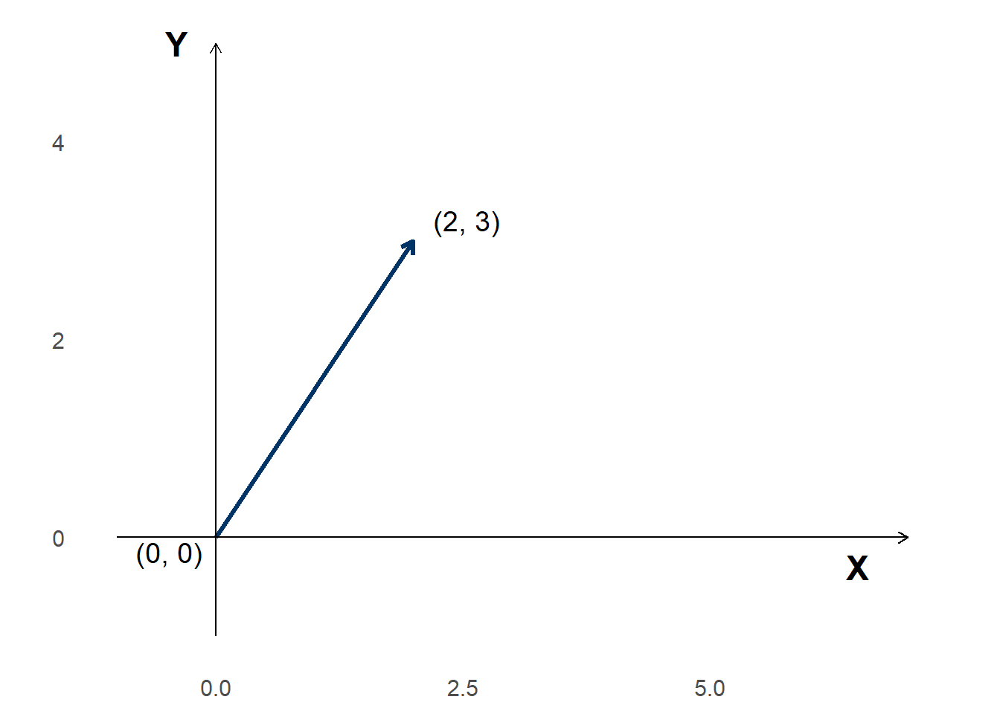
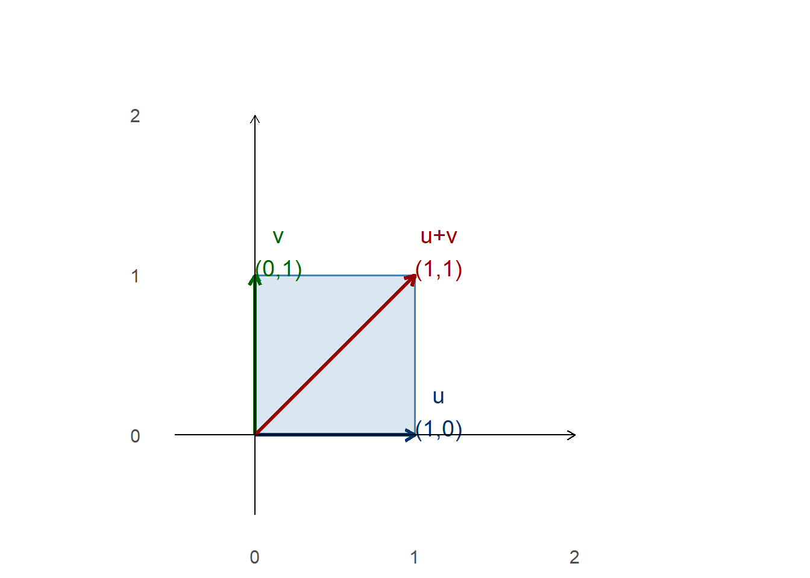
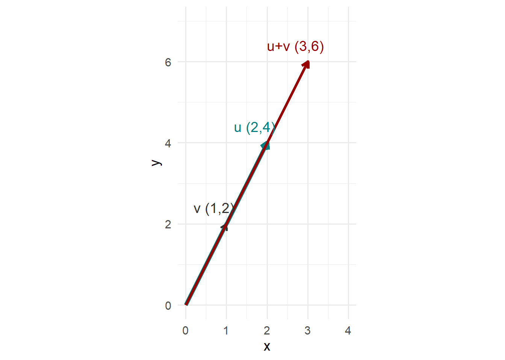
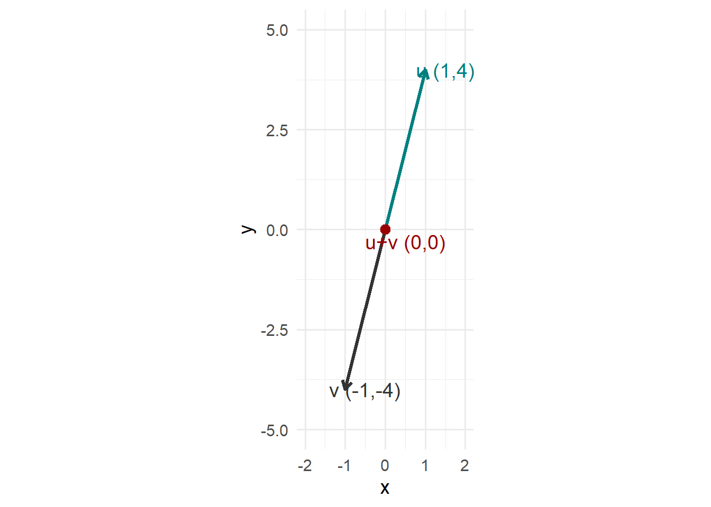

Los vectores son una entidad matemática con magnitud (tamaño) y dirección. Gráficamente, se representa como un segmento de línea dirigido en un plano.
Comunmente, se denotan por las letras \(u, v, w, y, z\).
Para un vector \(u = \begin{bmatrix} x_1 \\ y_1 \end{bmatrix}\) o \(v = \begin{bmatrix} x_1 \quad y_1 \end{bmatrix}\), \(x_1\) y \(y_1\) son números reales.
A los valores \(x_1\) y \(y_1\) se les conoce como componentes del vector.
Los vectores tienen su punto de salida en el origen \((0, 0)\) y un punto de llegada \(v = \begin{bmatrix} x_1 \quad y_1 \end{bmatrix}\).
NoteMedidas de los vectores
Longitud: representa la magnitud del segmento. Se calcula mediante la fórmula \[\| u \| = \sqrt{x_1^2 + y_1^2}\].
Dirección: representa el ángulo \(\theta\), medido en radianes, que se forma entre el eje X y el vector \(u\). Por convención, definimos \(\theta\) entre \(0\) y \(2\pi\).
\[\tan \theta = \frac{c.o}{c.a} \therefore \theta = \tan^{-1} \left( \frac{b}{a} \right)\]
Operaciones con vectores
Suma
Sean \(u\) y \(v\) dos vectores, ambos se pueden sumar si y solo si pertenecen al mismo espacio vectorial, es decir, tienen los mismos componentes. La suma de vectores esta dada por \(u + v=(x_1+x_2,\quad y_1+y_2)\).
Por ejemplo, si \(u = (1, 2)\) y \(v = (3, -4)\), entonces \[u+v = (1 + 3, 2 -4) = (4, -2)\]
Gráficamente, \(u + v\) es la diagonal del paralelogramo definido por los vectores \(u\) y \(v\).

Es importante tener en cuenta que los vectores pueden expresarse como una matriz:
\[ A= \begin{bmatrix} 1 & 2 \\ 3 & -4 \end{bmatrix} \qquad A^T= \begin{bmatrix} 1 & 3 \\ 2 & -4 \end{bmatrix} \]
Con este arreglo, podemos calcular el determinante, el cuál nos indica el área del paralelogramo que forma.
\[|A|=|(1\cdot-4)-(3\cdot2)|=|-10|=10u^2\]
Ejercicios en clase
- Calcula la longitud de cada vector.
- Grafica en el plano los vectores, el vector resultante de la suma y el paralelogramo resultante.
- Calcula el área del paralelogramo.
I) \(u=(1,0); v=(0,1)\)
Longitud:
\(\|u\| = \sqrt{1^2 + 0^2} = \sqrt{1} = 1\)
\(\|v\| = \sqrt{0^2 + 1^2} = \sqrt{1} = 1\)
Suma de vectores:
\(u+v = (1+0, 0+1) = (1, 1)\)
Área del paralelogramo:
\[A = \begin{bmatrix} 1 & 0 \\ 0 & 1 \end{bmatrix}\]
\[|A| = |(1 \cdot 1) - (0 \cdot 0)| = |1| = 1u^2\]
Gráfico:

II) \(u=(2,4); v=(1,2)\)
Longitud de los vectores:
\[\Vert{}u\Vert{} = \sqrt{2^2 + 4^2} = \sqrt{4+16} = \sqrt{20} \approx 4.47\]
\[\Vert{}v\Vert{} = \sqrt{1^2 + 2^2} = \sqrt{1+4} = \sqrt{5} \approx 2.24\]
Suma:
\[u+v = (2+1, 4+2) = (3, 6)\]
Área del paralelogramo:
\[A = \begin{bmatrix} 2 & 4 \\ 1 & 2 \end{bmatrix}\]
\[\vert{}A\vert{} = \vert{}(2 \cdot 2) - (1 \cdot 4)\vert{} = \vert{}4 - 4\vert{} = 0 u^2\]
El área es cero debido a que los vectores son colineales y se sobreponen en la misma línea, por lo que no forman un paralelogramo.
Gráfico:

III) \(u=(1,4); v=(-1,-4)\)
Longitud de los vectores:
\[\Vert{}u\Vert{} = \sqrt{1^2 + 4^2} = \sqrt{17} \approx 4.12\]
\[\Vert{}v\Vert{} = \sqrt{(-1)^2 + (-4)^2} = \sqrt{1+16} = \sqrt{17} \approx 4.12\]
Suma:
\[u+v = (1-1, 4-4) = (0, 0)\]
Área del paralelogramo:
\[A = \begin{bmatrix} 1 & 4 \\ -1 & -4 \end{bmatrix}\]
\[\vert{}A\vert{} = \vert{}(1 \cdot -4) - (-1 \cdot 4)\vert{} = \vert{}-4 - (-4)\vert{} = 0 u^2\]
El vector resultante queda en el origen ya que los vectores tienen direcciones exactamente opuestas.
Gráfico:

IV) \(u=(1,0,0); v=(0,1,0); w=(0,0,1)\)
Longitud de los vectores: Para vectores en \(\mathbb{R}^3\), la fórmula de longitud se extiende para integrar el componente de profundidad (\(z\)): \[\Vert{}u\Vert{} = \sqrt{1^2 + 0^2 + 0^2} = 1\] \[\Vert{}v\Vert{} = \sqrt{0^2 + 1^2 + 0^2} = 1\] \[\Vert{}w\Vert{} = \sqrt{0^2 + 0^2 + 1^2} = 1\]
Suma:
\[u+v+w = (1+0+0, 0+1+0, 0+0+1) = (1, 1, 1)\]
- Volumen (Área en 3D):En un espacio de tres dimensiones, los vectores forman un paralelepípedo. Representamos el sistema como una matriz de \(3 \times 3\) y calculamos su determinante para obtener el volumen:
\[A = \begin{bmatrix} 1 & 0 & 0 \\ 0 & 1 & 0 \\ 0 & 0 & 1 \end{bmatrix}\]
\[\vert{}A\vert{} = 1((1 \cdot 1) - (0 \cdot 0)) - 0 + 0 = 1 u^3\]
- Gráfico 3D:(Dado que ggplot2 se enfoca en representaciones en 2D, para este ejercicio incluimos el código usando la librería interactiva plotly que renderizará el espacio tridimensional en el documento final).
# Requiere instalar.packages("plotly")
library(plotly)
fig <- plot_ly(type = "scatter3d", mode = "lines+markers") %>%
add_trace(x = c(0,1), y = c(0,0), z = c(0,0), name = "u (1,0,0)",
line = list(color = "#008080", width = 5)) %>%
add_trace(x = c(0,0), y = c(0,1), z = c(0,0), name = "v (0,1,0)",
line = list(color = "#333333", width = 5)) %>%
add_trace(x = c(0,0), y = c(0,0), z = c(0,1), name = "w (0,0,1)",
line = list(color = "#555555", width = 5)) %>%
add_trace(x = c(0,1), y = c(0,1), z = c(0,1), name = "Suma (1,1,1)",
line = list(color = "#990000", width = 6, dash = "dash")) %>%
layout(scene = list(xaxis = list(title = "Eje X"),
yaxis = list(title = "Eje Y"),
zaxis = list(title = "Eje Z")))
fig